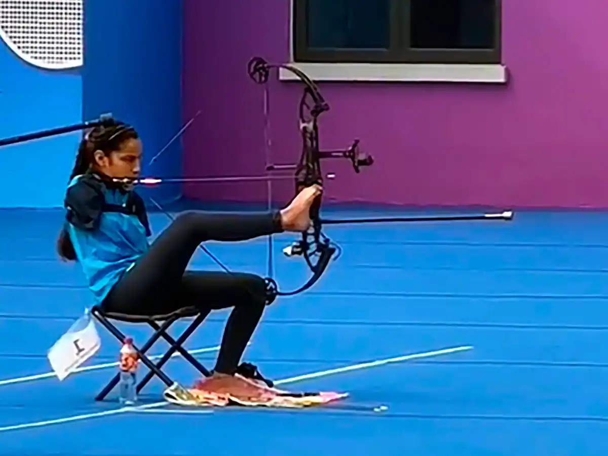

In India, several government schemes are designed to support and empower disabled individuals. These schemes aim to provide financial assistance, education, employment opportunities, healthcare, and overall welfare. Here are some key schemes for disabled persons in India:

Sugamya Bharat Abhiyan (Accessible India Campaign)
Objective: To create a barrier-free environment for persons with disabilities (PwDs) in terms of physical infrastructure, transportation systems, and information and communication technology.
Features: Ensuring accessibility in government buildings, enhancing accessible public transportation, and creating accessible websites and online services.
Deendayal Disabled Rehabilitation Scheme (DDRS)
Objective: To provide financial assistance to NGOs for projects aimed at rehabilitation and education of PwDs.
Features: Support for early intervention programs, vocational training, and providing aids and appliances to disabled persons.
National Handicapped Finance and Development Corporation (NHFDC)
Objective: To promote economic development activities and self-employment ventures for disabled persons.
Features: Concessional loans for starting businesses, pursuing education, and purchasing assistive devices. The NHFDC also offers scholarships to students with disabilities.
ADIP Scheme (Assistance to Disabled Persons for Purchase/Fitting of Aids/Appliances)
Objective: To provide durable and scientifically manufactured modern aids and appliances to PwDs to enhance their physical, social, and psychological rehabilitation.
Features: Free distribution of aids and appliances like hearing aids, wheelchairs, crutches, and prosthetic devices to those with more than 40% disability and with monthly income not exceeding certain limits.
Pre-Matric Scholarship for Students with Disabilities:
Objective: To encourage students with disabilities to pursue education.
Features: Financial assistance for schooling, books, and allowances for readers for blind students.
Employment Exchange for Physically Handicapped:
Objective: To facilitate employment opportunities for PwDs.
Features: Special employment exchanges and cells within regular exchanges to help disabled individuals find suitable employment.
Pradhan Mantri Kaushal Vikas Yojana (PMKVY)
Objective: To provide skill training to youth, including PwDs, to enhance their employability.
Features: Free skill training programs, certification, and placement support for PwDs in various trades and sectors.
National Fellowship for Persons with Disabilities (NFPwD)
Objective: To provide financial assistance to students with disabilities for pursuing M.Phil/Ph.D. in Indian universities.
Features: Fellowships covering maintenance allowance, contingency grant, escort/reader assistance, and house rent allowance.
Inclusive Education for Disabled at Secondary Stage (IEDSS)
Objective: To support the education of disabled children in mainstream schools.
Features: Financial assistance for aids, appliances, readers, and transport allowance for students with disabilities.
Scheme for Implementation of Persons with Disabilities Act (SIPDA)
Objective: To support states and union territories in the implementation of the Persons with Disabilities Act, 1995.
Features: Grants-in-aid for creating accessible environments, support for NGOs, and programs for awareness and training.
Unique Disability ID (UDID) Project
Objective: To create a national database of PwDs and issue a unique disability identity card.
Features: Streamlining the identification process and ensuring direct benefits and ease of access to services.
Incentives to Private Sector Employers for Providing Employment to Persons with Disabilities
Objective: To encourage private sector employers to hire PwDs.
Features: Financial incentives for employers providing regular employment to disabled persons with monthly wage subsidy and EPF contributions.